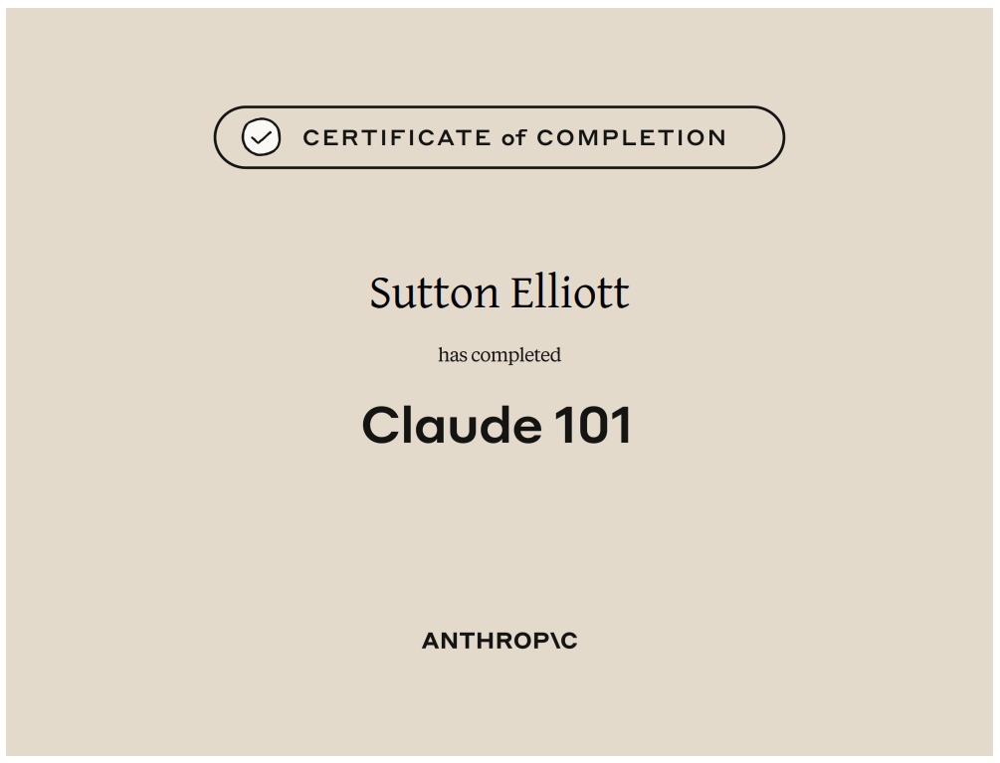

Texas A&M University — B.S. in Computer Engineering, Minor in Mathematics Aug 2022 - May 2026
At Texas A&M, I developed a strong foundation in computer engineering, software development,
and applied mathematics. My coursework and projects emphasize the integration of theory and practice
across software, hardware, and data-driven systems, preparing me to design efficient, reliable, and
scalable solutions.
Machine Learning & AI:
Implemented models including logistic regression, multi-layer perceptrons, and LeNet using PyTorch.
Explored supervised and unsupervised learning, optimization techniques, and model evaluation.
Software & Database Systems:
Designed and queried relational databases using SQL, created ER diagrams, and built Java GUIs with
JDBC connectivity for interactive data-driven applications.
Web Development:
Developed full-stack applications using HTML, PHP, SQL, and C++, with an emphasis on user
interaction, data processing, and backend integration.
Hardware & Circuit Design:
Applied engineering principles in analog and digital design, including MOSFET amplifiers,
common-source configurations, and digital logic systems.
Computer Science & Software Engineering
This coursework emphasizes software design, algorithmic thinking, and system-level programming.
Topics span data structures, databases, operating systems, machine learning, and human-computer
interaction, with a strong focus on building robust and maintainable software systems.
CSCE 120 - Program Design & ConceptsCSCE 221 - Data Structures & AlgorithmsCSCE 222 - Discrete StructuresCSCE 310 - Database SystemsCSCE 313 - Computer SystemsCSCE 331 - Software EngineeringCSCE 421 - Machine LearningCSCE 436 - Human Computer InteractionCSCE 470 - Information Storage and RetrievalCSCE 483 - Computer Systems Design
Computer & Electrical Engineering
These courses focus on the hardware-software interface, including digital logic, computer
architecture, electronics, and embedded systems. Together, they provide a deep understanding of how
modern computing systems are designed, implemented, and optimized at the hardware level.
ECEN 214 - Electrical Circuit TheoryECEN 248 - Digital System DesignECEN 314 - Signals & SystemsECEN 325 - ElectronicsECEN 350 - Computer ArchitectureECEN 449 - Microprocessor SystemsECEN 454 - Digital IC Design
Mathematics Minor
This coursework covers advanced mathematical concepts essential for engineering applications,
including calculus, differential equations, linear algebra, and statistics. These classes
provide the analytical tools needed for modeling, problem-solving, and data analysis in
technical fields.
These foundational courses in physics and engineering principles provide a solid base for
understanding the physical world and its applications in engineering. Topics include mechanics,
electromagnetism, chemistry, materials science, and laboratory techniques essential for
engineering practice.
Beyond the classroom, I'm committed to continuing to learn and grow my skillset through
self-directed coursework and certifications in emerging tools and technologies.
Anthropic
Completed Introduction to Model Context Protocol, Claude Code 101, and Claude 101
(June 2026), learning how to connect AI models to external tools and data through MCP,
how to use Claude Code as an agentic coding assistant, and the fundamentals of prompting
and working with Claude.
Intro to MCP
Claude Code 101

Claude 101
Onshape
Completed the CAD Basics, Onshape Fundamentals, Onshape Fundamentals: CAD, and Onshape
Fundamentals: Data Management learning pathways, building skills in part modeling,
assemblies, and managing design data in the cloud, in preparation for the Certified
Onshape Associate Certificate.
 Intro to MCP
Intro to MCP
 Claude Code 101
Claude Code 101
 CAD Basics
CAD Basics
 Fundamentals: CAD
Fundamentals: CAD